Success-weighted inverse path cost (SPC, ↑ better) on randomly sampled tasks.
Global navigation for ground robots in complex multi-level environments requires representations that accurately capture traversable regions while enabling efficient path planning. Point clouds and volumetric maps lack explicit surface structure, while pathfinding directly on dense triangle meshes is computationally expensive. Classical navigation meshes reduce this complexity, but assume yaw-invariant traversability and are therefore unsuitable for non-circular robots in constrained spaces.
We propose the SE(2) Navigation Mesh, a polygonal representation that encodes yaw-dependent traversability. Our method evaluates traversability using footprint masks, constructs a graph over yaw-specific layers with translational and rotational connectivity, and plans paths using an A *–String Pulling–A * (ASA) strategy that hierarchically optimizes robot position and heading. An online variant incrementally updates the mesh from streaming point clouds during concurrent map reconstruction. In simulation, SE(2) NavMesh captures over 50% more traversable area than classical NavMeshes; ASA outperforms sampling-based planners in constrained environments; and the online method maintains real-time performance. Real-world experiments on a legged robot validate online generation and navigation across multiple environments.
Overview, planning demonstrations, and real-world legged-robot experiments.
Method overview: yaw layers, footprint masks, and ASA planning.
Real-world navigation across multi-level, narrow, and overhanging scenes.
Online SE(2) NavMesh generation from onboard point clouds during a walk.
Classical navigation meshes are efficient because they replace dense geometry with connected convex polygons. But they assume a robot's traversability is independent of yaw — reasonable for a circular agent, too coarse for a rectangular or legged robot. In a narrow doorway, beside an overhang, or on a staircase, the same position can be feasible for one heading and blocked for another.
Try it below: a robot with the footprint of an ANYmal (0.93 m × 0.53 m) at the center of a passage. Rotate it and watch which headings actually fit. A yaw-invariant NavMesh would simply discard this whole region; SE(2) NavMesh keeps it as a restricted region with the exact set of headings that work.
Heading 0° FITS
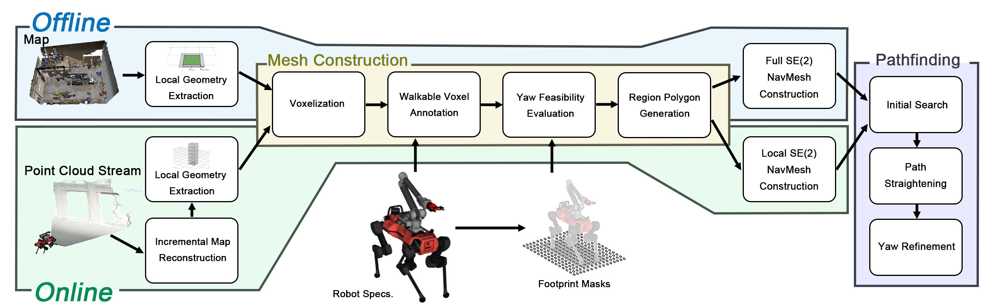
Offline construction builds the representation from a pre-built map; online construction updates it from streaming point clouds. Map geometry is processed with robot-specific traversal constraints, then ASA pathfinding runs on the generated SE(2) NavMesh.
We approximate the robot as a cuboid of length $l_\mathrm{robot}$, width $w_\mathrm{robot}$, and height $h_\mathrm{robot}$, which is far tighter than a circumscribed cylinder for non-circular robots. The continuous yaw interval $[0, 2\pi)$ is discretized into $N_\Psi$ headings, $\Psi = \{\psi_1, \dots, \psi_{N_\Psi}\}$, each defining a yaw channel. For a position $\mathbf{p}$, channel $i$ is feasible ($C_i(\mathbf{p}) = 1$) if the robot can occupy $\mathbf{p}$ with heading $\psi_i$.
Feasibility is evaluated with a footprint mask: a binary occupancy grid of the robot footprint. We use continuous-yaw masks — the union swept over a small yaw interval — so that a position feasible under adjacent channels guarantees a safe in-place rotation between those headings.
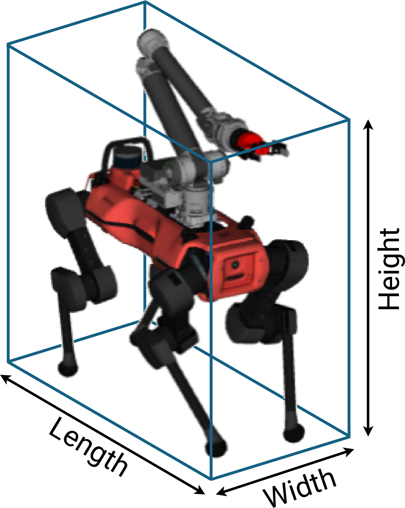
Cuboid approximation.
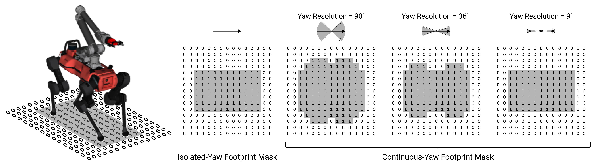
Continuous-yaw footprint masks rasterized per heading.
Each traversable region $\mathcal{R}_j$ has a feasible yaw-channel set $\mathcal{I}(\mathcal{R}_j)$. A region is safe if every heading works ($\mathcal{I}(\mathcal{R}_j) = \mathcal{I}_\Psi$) and restricted if only a subset does ($\emptyset \subsetneq \mathcal{I}(\mathcal{R}_j) \subsetneq \mathcal{I}_\Psi$). Lifting regions into per-channel layers $\mathcal{L}_i$ gives the SE(2) graph, with two edge types:
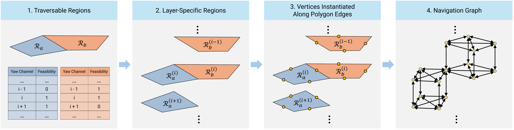
Layer-specific regions and the navigation graph: vertices on polygon edges connect within and across yaw layers.
Planning on the SE(2) NavMesh runs in three stages, A *–String Pulling–A *. Step through them below to see how the path is first found, then geometrically straightened, then re-optimized in yaw.
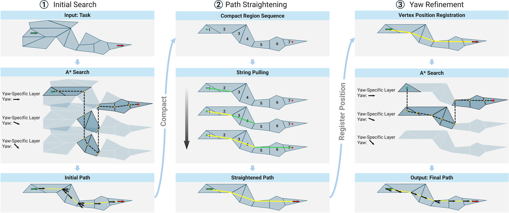
The three ASA stages as shown in the paper. String pulling shortens the path but can mismatch yaw; the final A * refinement restores yaw consistency, yielding lower cost than the initial path.
For onboard deployment, the SE(2) NavMesh is built incrementally as Voxblox reconstructs the environment from streaming point clouds. Tiles are split vertically into slabs; when geometry in a slab changes, only slabs inside a small 3D update window are rebuilt and merged back into the global mesh. This keeps updates local and bounded as the map grows.
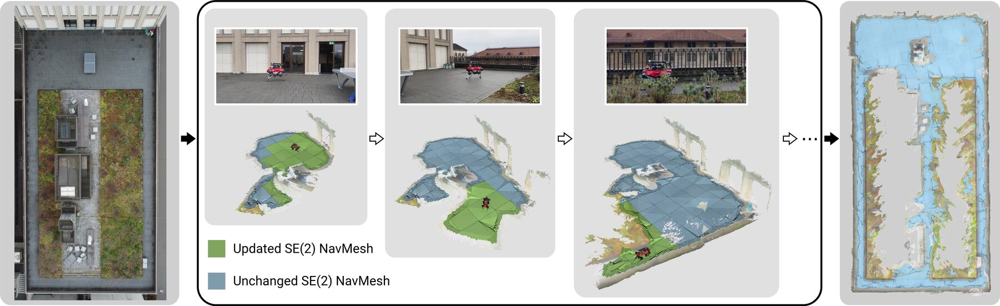
Online generation in a garden: only slabs affected by new geometry (green) are updated; unaffected slabs (blue) are retained. Right: final reconstructed geometry and SE(2) NavMesh.
A real, ROS-generated SE(2) NavMesh on textured HM3D scenes. The colored carpet is the
traversability field: safe cells fit the robot footprint at every heading, while
restricted cells fit at only some. The blue overlay is the final Detour polygon graph exported by
se2_navmesh_static. Drag to orbit, scroll to zoom.
Across six HM3D scenes, SE(2) NavMesh captures over 50% more traversable area than the classical NavMesh in every scene, and its restricted regions bridge previously disconnected components. Pick a scene and drag the handle to wipe between the two — SE(2) NavMesh keeps the narrow aisles, doorways, and passages that the yaw-invariant NavMesh discards.
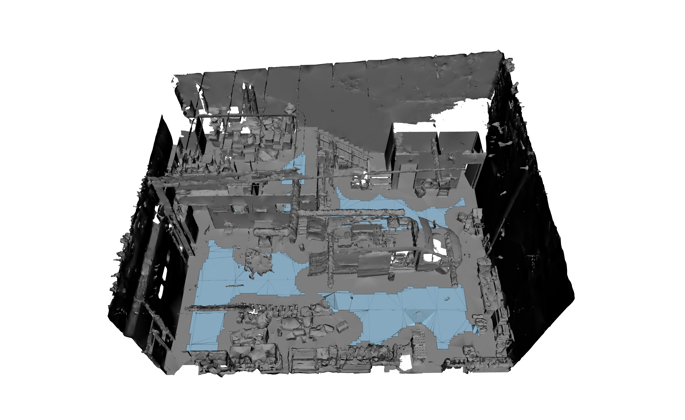
Classical NavMesh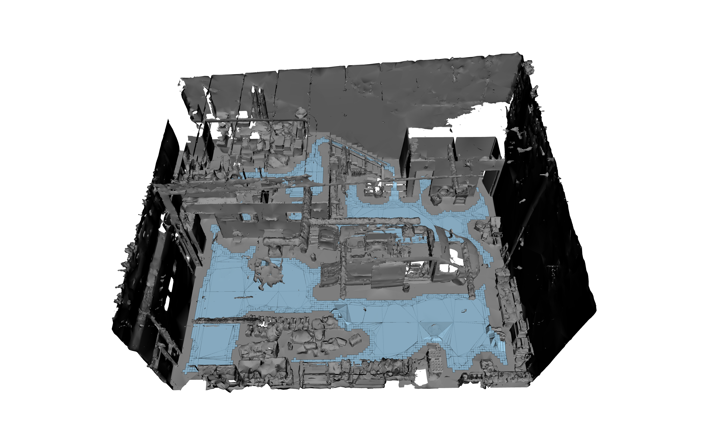
SE(2) NavMeshTraversable regions (blue) in the Garage scene — classical NavMesh vs. SE(2) NavMesh, rendered from the same viewpoint. Pick a scene above; drag to wipe between methods.
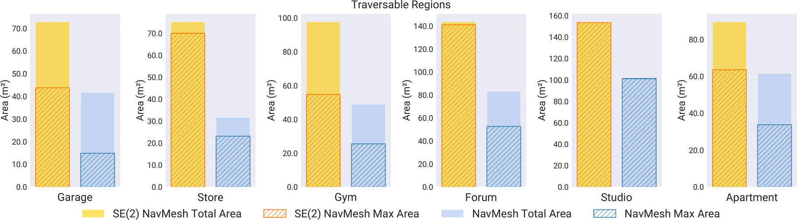
Total and largest-connected traversable area per scene — SE(2) NavMesh dominates the NavMesh everywhere.
We compare ASA against sampling-based planners (RRT, RRT*, PRM) using both a voxel checker and an
SE(2)-NavMesh checker (suffix -SE2NM). On 100 randomly sampled start–goal pairs in
two representative scenes, ASA achieves the highest success rate (SR) and success-weighted inverse path
cost (SPC).
Success-weighted inverse path cost (SPC, ↑ better) on randomly sampled tasks.
| Planner | Gym SR | Gym SPC | Studio SR | Studio SPC |
|---|---|---|---|---|
| ASA (ours) | 41% | 0.41 | 98% | 0.98 |
| RRT-SE2NM | 40% | 0.13 | 97% | 0.29 |
| RRT*-SE2NM | 32% | 0.18 | 82% | 0.26 |
| PRM-SE2NM | 41% | 0.27 | 96% | 0.63 |
| RRT | 41% | 0.13 | 97% | 0.29 |
| RRT* | 36% | 0.16 | 80% | 0.25 |
| PRM | 36% | 0.15 | 84% | 0.42 |
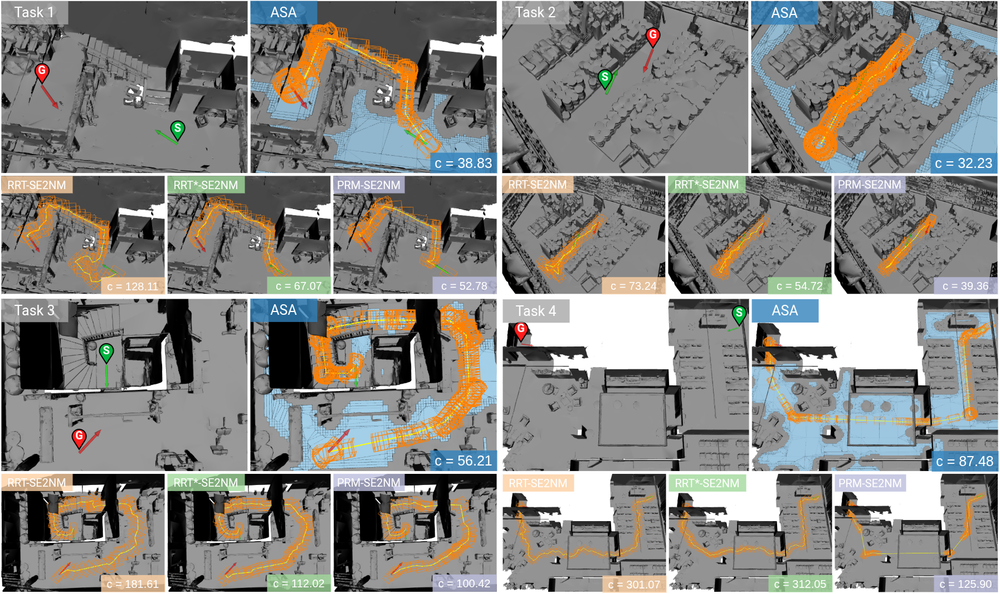
Constrained pathfinding tasks (stairs, narrow passages, doorways). ASA produces straighter paths with smoother rotation than sampling-based planners.
We deploy the online pipeline on an ANYmal quadruped with a wrist-mounted ZED X Mini camera, running entirely on an onboard NVIDIA Jetson Orin. Local slab updates sustain 4 Hz throughout a walk, whereas global rebuilds fall behind as the map grows. The robot then navigates multi-level, cluttered, narrow, and overhanging real-world scenes using the generated mesh — including a 41 m corridor traverse and a 0.8 m-wide passage only 0.27 m wider than the robot.
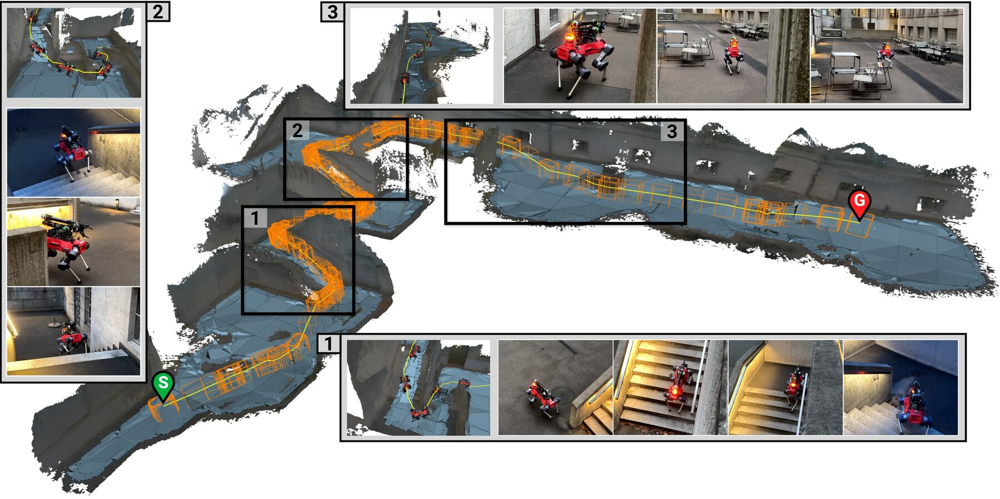
Outdoor multi-level: ascending stairs to an upper platform.
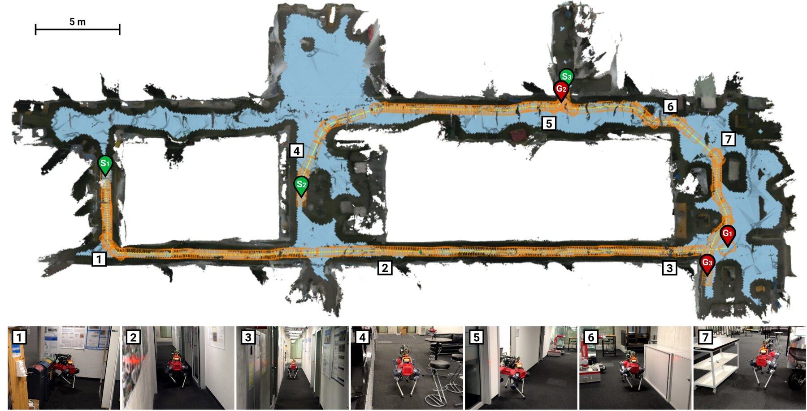
Indoor: narrow corridors, doorways, and cluttered regions.
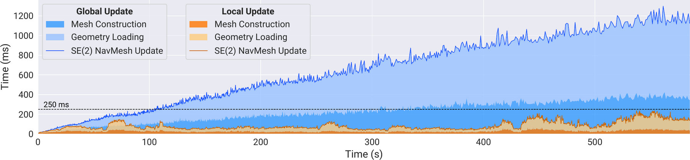
Local updates hold the 4 Hz target; global updates grow unbounded as the reconstructed map expands.
@article{anonymous2026se2navmesh,
title = {SE(2) Navigation Mesh},
author = {Anonymous Authors},
journal = {Anonymous Submission},
year = {2026}
}